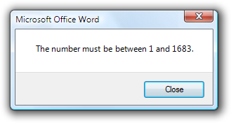
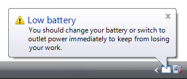
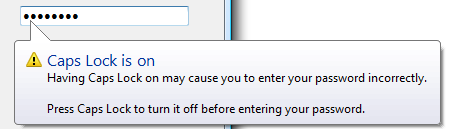
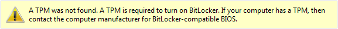

[!NOTE] This design guide was created for Windows 7 and has not been updated for newer versions of Windows. Much of the guidance still applies in principle, but the presentation and examples do not reflect our current design guidance.
Standard icons are the error, warning, information, and question mark icons that are part of Windows.

The standard error, warning, information, and question mark icons.
The standard icons have these meanings:
The standard icons are notable because they are built into many Windows application programming interfaces (APIs), such as task dialogs, message boxes, balloons, and notifications. They are also commonly used on in-place messages and status bars.
Note: Guidelines related to icons are presented in a separate article.
There are several factors in choosing the appropriate standard icon which in part explains why they are so often used incorrectly. The most common mistakes are:
The remainder of this section explains how to think about standard icons in order to avoid these common mistakes.
Choose standard icons based the message type, not the severity of the underlying issue. The message types are:
Consequently, an error message might take an error icon but never a warning icon. Don't use warning icons as a way to "soften" minor errors. So despite their difference in severity, "Incorrect font size" is an error, whereas "Continuing with this operation will set your house on fire" is a warning.
Some issues can be presented as an error, warning, or information, depending on the emphasis and phrasing. For example, suppose a Web page cannot load an unsigned ActiveX control based on the current Windows Internet Explorer configuration:
To determine the appropriate message type, focus on the most important aspect of the issue that users need to know or act upon. Typically, if an issue blocks the user from proceeding, it is presented as an error; if the user can proceed, it's a warning. Craft the main instruction or other corresponding text based on that focus, and then choose an icon (standard or otherwise) that matches the text. The main instruction text and icons should always match.
While severity isn't a consideration when choosing among the error, warning, and information icons, severity is a factor in determining if a standard icon should be used at all.
Icons work best when used to communicate visually. (Note that for accessibility reasons, this visual communication must always be redundant with another form, such as text or sound.) Users should be able to tell at a glance the nature of the information and the consequences of their response, so we must differentiate critical errors and warnings from their ordinary counterparts. Critical errors and warnings have these characteristics:
To distinguish non-critical errors and warnings from critical ones, non-critical messages are usually displayed without an icon. Doing so draws attention to critical messages, makes critical and non-critical messages visually distinct, and is consistent with the Windows tone.
Not every message needs an icon. Icons are not a way to decorate messages.
The following is a good example of a critical warning because it meets the previously defined characteristics.

In this example, a critical warning alerts users of potential irreversible data loss.
However, the next example isn't critical because it is likely to be intentional and its results are easily undone.
Incorrect:

In this example, this confirmation isn't critical because it's likely to be intentional and easily undone.
In a typical UI, most errors relate to user input errors. Most user input errors aren't critical because they are easily corrected, and users must correct them before continuing. Also, drawing too much attention to minor user mistakes is contrary to the Windows tone. Consequently, minor user input errors are usually displayed without an error icon. To reinforce their non-critical nature, we refer to these as user input problems.

In this example, this minor user input problem isn't critical, so it doesn't need an icon when presented in a dialog box.
We overwarn in Windows programs. The typical Windows program has warning icons seemingly everywhere, warning about things that have little significance. In some programs, nearly every question is presented as a warning. Overwarning makes using a program feel like a hazardous activity, and it detracts from truly significant issues.
The mere potential for data loss alone is insufficient to call for a warning icon. Additionally, any undesirable results should be unexpected or unintended and not easily corrected. Otherwise, just about any incorrectly answered question could be construed to result in data loss of some kind and merit a warning icon.
To focus warning icons on truly critical issues:
Incorrect:
In this example, are users likely to answer this question differently because of the warning icon?
Incorrect:

Why is this notification a warning? What are users supposed to do (beside worry)?
Context is also a consideration in using standard icons because the context itself communicates information. Specifically:
Because context is a significant factor in icon usage, the standard icon guidelines in this article are given in terms of their context.
When evaluating your UI text, read any standard icons as well. Read error icons as "error!", warning icons as "warning, be very careful here!", and information icons as "attention!". Then continue to read the remaining context, such as the main instruction, content area, and commit buttons. Make sure the meaning and the tone of each standard icon matches the meaning and the tone of its context. If they don't, you've found a problem.
If you do only one thing...
Make sure the meaning and the tone of each standard icon matches the meaning and the tone of its context. If they don't match, change or remove the icon.
Note: For the following guidelines, "in-place" means on any normal window surface, such as within the content area of a wizard, property sheet, or control panel item page.
Correct:

Incorrect:

In the incorrect example, the standard warning icon doesn't match the main instruction (which gives an error).
Choose the standard icon size based on the context:
| Context | When to use |
|---|---|
| Dialog boxes | Use 32x32 pixel for content area icons; 16x16 pixel for footnote area icons. |
| In-place | Use 32x32 pixel for error pages; 16x16 pixel icons for all others. |
| Notifications | Use 16x16 pixel icons. |
| Balloons | Use 16x16 pixel icons. |
| Banners | Use 16x16 pixel icons. |
Use error icons only when an error or a problem has occurred:
| Context | When to use |
|---|---|
| Dialog boxes | Use for critical errors only. (don't use standard icons for non-critical errors.) |
| In-place errors | Use for all errors. |
| Notifications | Use for critical errors only. (for action failures.) |
| Balloons | Don't use. Balloons shouldn't be used for critical errors, and they don't need error icons for non-critical errors. |
| Banners | Don't use. Banners shouldn't be used for errors. |
Generally, error icons aren't needed for non-critical user input problems. However, icons are needed for in-place errors, because otherwise such contextual feedback would be too easy to overlook.
For task dialogs, don't use error footnote icons. Error icons must be presented in the content area only.
Use warning icons only when a condition might cause a problem in the future:
| Context | When to use |
|---|---|
| Dialog boxes | Use for all warnings. |
| In-place warnings | Use to identify the text as a warning. |
| Notifications | Use for all warnings. (for non-critical system events.)  |
| Balloons | Use for special conditions.  |
| Banners | Use to draw attention to the banner.  |
Don't use warning icons to "soften" non-critical errors. Errors aren't warnings apply the error icon guidelines instead.
For question dialogs, use warning icons only for questions with significant consequences. Don't use warning icons for routine questions.
Correct:
Incorrect:

In the incorrect example, a warning icon is incorrectly used for a routine question.
In this example, a yellow security shield is used in a footnote.
Use information icons only when the context isn't obviously presenting information:
| Context | When to use |
|---|---|
| Dialog boxes | Don't use. |
| In-place | Don't use. Use either plain static text or a banner instead. |
| Notifications | Don't use. |
| Balloons | Don't use. |
| Banners | use to draw attention to the banner. |
Information icons aren't needed in dialog boxes, notifications, and balloons because their context sufficiently communicates that they are providing users with information.
For task dialogs, don't use information footnote icons. Footnotes are sufficiently visible and it goes without saying that they are information.